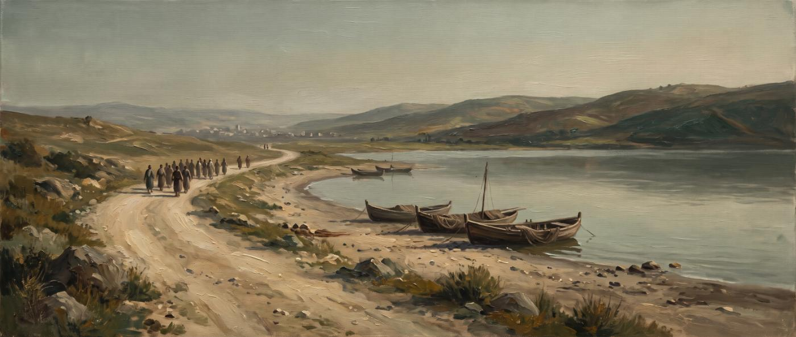
열두 제자는 누구였을까
예수님은 많은 사람 가운데 열두 명을 따로 뽑으셨어요. 어부도 있었고, 세금 걷는 사람도 있었고, 이름만 겨우 남은 사람도 있었어요. 열두 사람의 이름과 이야기를 한 사람씩 모았어요.
제자, 사도, 열둘 — 무엇이 다를까요?
같은 열두 사람을 성경은 여러 이름으로 불러요. 이름마다 뜻이 조금씩 달라요.
이에 열둘을 세우셨으니 이는 자기와 함께 있게 하시고 또 보내사 전도도 하며
마가복음 3:14 · 개역개정
이 한 절에 두 가지 일이 다 들어 있어요. 먼저 함께 있는 것, 그다음 보냄 받는 것이에요. 제자라는 이름은 앞의 일을, 사도라는 이름은 뒤의 일을 가리켜요.
| 이름 | 원래 말 · 뜻 | 이런 뜻이에요 | 성경 |
|---|---|---|---|
| 제자 | 배우는 사람 (마테테스) | 선생님 곁에 붙어 다니며 배우는 학생이에요.열두 명 말고도 예수님을 따르던 제자는 훨씬 많았어요. | 마 10:1 |
| 사도 | 보냄 받은 사람 (아포스톨로스) | 심부름을 맡겨 멀리 보낸 대리인이에요.예수님이 직접 이 이름을 붙여 주셨다고 누가가 적었어요. | 눅 6:13 |
| 열둘 | 그 열둘 (호이 도데카) | 숫자 자체가 이름처럼 쓰였어요.이스라엘 열두 지파를 떠올리게 하는 숫자예요. | 막 3:14 · 마 19:28 |
| 열한 사도 | 유다가 빠진 뒤 | 가룟 유다가 떠난 뒤 한동안 이렇게 불렸어요. | 행 1:26 |
| 친구 | 예수님이 부르신 이름 | 마지막 저녁에 “이제부터 종이 아니라 친구라”고 하셨어요. | 요 15:15 |
| 얘들아 | 예수님이 부르신 이름 | 부활하신 뒤 호숫가에서 고기 잡던 제자들을 이렇게 부르셨어요. | 요 21:5 |
한 사람에게 이름이 왜 여럿일까요?
그때 유대 땅에는 같은 이름이 너무 많았어요. 그래서 별명이나 아버지 이름, 고향 이름을 붙여야 누군지 알 수 있었어요.
기원전 330년부터 기원후 200년까지 유대 땅에 살았던 남자 2,625명의 이름을 모은 사전이 있어요. 그 사전을 세어 보니 시몬이 1등, 유다가 4등, 요한이 5등이었어요. 열두 제자 가운데 다섯 명이 이 흔한 이름을 썼어요. 야고보도 두 명이에요. 그러니 “베드로라 하는 시몬”, “가룟 유다”처럼 꼭 뭔가를 붙여 불러야 했던 거예요.
데리고 예수께로 오니 예수께서 보시고 이르시되 네가 요한의 아들 시몬이니 장차 게바라 하리라 하시니라 (게바는 번역하면 베드로라)
요한복음 1:42 · 개역개정
이 한 절에 이름이 네 겹이에요. 아버지 이름(요한의 아들), 본래 이름(시몬), 아람 말 별명(게바), 헬라 말 별명(베드로). 게바와 베드로는 둘 다 바위라는 뜻이에요.
명단 네 개를 나란히 놓으면?
성경에는 열두 명의 명단이 네 번 나와요. 순서가 조금씩 다르지만, 넷씩 세 묶음으로 나뉘고 묶음마다 첫 사람은 늘 같아요.
| 순서 | 마태복음 10:2–4 | 마가복음 3:16–19 | 누가복음 6:14–16 | 사도행전 1:13 |
|---|---|---|---|---|
| 첫째 묶음 — 늘 베드로가 맨 앞 | ||||
| 1 | 베드로라 하는 시몬 | 시몬 (베드로) | 베드로라 이름을 주신 시몬 | 베드로 |
| 2 | 안드레 | 세베대의 아들 야고보 | 안드레 | 요한 |
| 3 | 세베대의 아들 야고보 | 요한 | 야고보 | 야고보 |
| 4 | 요한 | 안드레 | 요한 | 안드레 |
| 둘째 묶음 — 늘 빌립이 맨 앞 | ||||
| 5 | 빌립 | 빌립 | 빌립 | 빌립 |
| 6 | 바돌로매 | 바돌로매 | 바돌로매 | 도마 |
| 7 | 도마 | 마태 | 마태 | 바돌로매 |
| 8 | 세리 마태 | 도마 | 도마 | 마태 |
| 셋째 묶음 — 늘 알패오의 아들 야고보가 맨 앞 | ||||
| 9 | 알패오의 아들 야고보 | 알패오의 아들 야고보 | 알패오의 아들 야고보 | 알패오의 아들 야고보 |
| 10 | 다대오 | 다대오 | 셀롯이라는 시몬 | 셀롯인 시몬 |
| 11 | 가나나인 시몬 | 가나나인 시몬 | 야고보의 아들 유다 | 야고보의 아들 유다 |
| 12 | 가룟 유다 | 가룟 유다 | 가룟 유다 | 없음 — 이미 떠났어요 |
그렇게 보는 쪽이 많아요. 마태·마가에 다대오가 있는 곳에 누가·사도행전은 ‘야고보의 아들 유다’를 적었어요. 요한복음도 “가룟인 아닌 유다”라는 제자를 따로 소개해요(요한복음 14:22). 그 무렵에는 한 사람이 이름을 여러 개 쓰는 일이 흔했어요. 다만 성경이 “둘은 같은 사람이다”라고 직접 말하지는 않아요.
그 뒤 이야기는 얼마나 오래된 걸까요?
성경은 제자들이 어떻게 죽었는지 거의 말하지 않아요. 그 빈 곳을 나중 사람들이 채웠어요. 그래서 이 페이지는 이야기마다 얼마나 오래된 기록인지 표시를 붙였어요.
- 성경 신약성경에 적혀 있어요
- 1~2세기 초 제자들을 기억하던 세대의 기록이에요
- 2~4세기 교회가 모아 둔 전승이에요
- 전설 훨씬 뒤에 생겼거나 서로 엇갈려요
열두 명을 한 사람씩 만나 볼까요?
이름을 누르면 그 사람에게 바로 가요. 순서는 마태복음 10장 명단을 따랐어요.
시몬 베드로
- 어떤 사람
- 갈릴리 호수의 어부예요. 고향은 벳새다이고, 가버나움에 집이 있었어요. 결혼을 해서 장모님이 계셨어요. 요 1:44 · 막 1:29–30
- 성경 속 장면
- 물 위를 걸어 예수님께 가다가 무서워 빠졌어요. 예수님을 모른다고 세 번 말하고 울었지만, 부활하신 예수님이 “내 양을 먹이라”며 다시 맡기셨어요. 오순절에는 맨 앞에서 설교했어요. 마 14:29–31 · 요 21:15–17 · 행 2장
- 그 뒤 이야기
- 성경 예수님이 베드로가 늙어서 어떤 죽음을 맞을지 미리 말씀하셨어요. 요 21:18–19
1~2세기 초 로마 교회 편지는 베드로가 많은 고난을 견디고 순교했다고 적었어요. 어디서 어떻게인지는 쓰지 않았어요.
2~4세기 로마에서 십자가에 달렸는데, 스스로 원해서 머리를 아래로 두었다는 이야기가 전해져요.
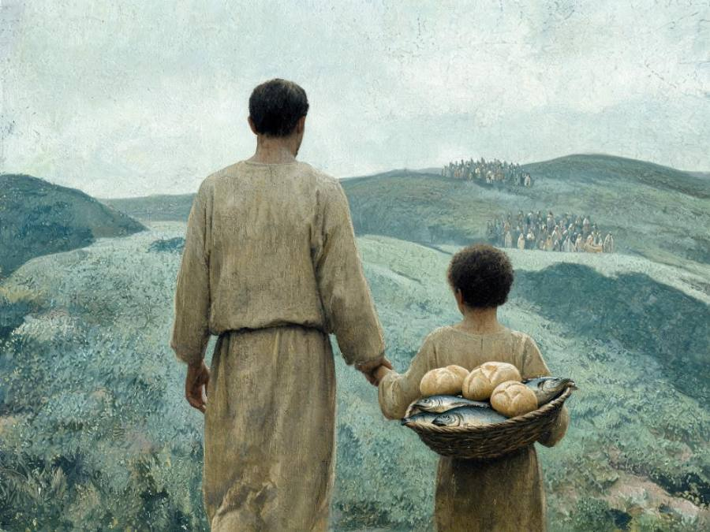
안드레
- 어떤 사람
- 베드로의 형제이고 같은 벳새다 어부예요. 원래는 세례 요한의 제자였어요. 예수님을 먼저 따라간 뒤 형제 시몬을 데려왔어요. 요 1:35–42
- 성경 속 장면
- 안드레는 늘 누군가를 예수님께 데려와요. 형제 시몬, 보리떡 다섯 개와 물고기 두 마리를 가진 아이, 예수님을 뵙고 싶어 한 헬라 사람들까지요. 요 6:8–9 · 12:20–22
- 그 뒤 이야기
- 1~2세기 초 파피아스가 “안드레가 무엇을 말했는지” 물었다고 적은 이름 목록에 맨 먼저 나와요.
2~4세기 흑해 북쪽 스구디아 땅을 맡았다는 전승이 있고, 그리스 파트라스에서 십자가에 달렸다는 이야기책도 있어요.
전설 X자 모양 십자가는 훨씬 뒤 중세에 굳어진 그림이에요.
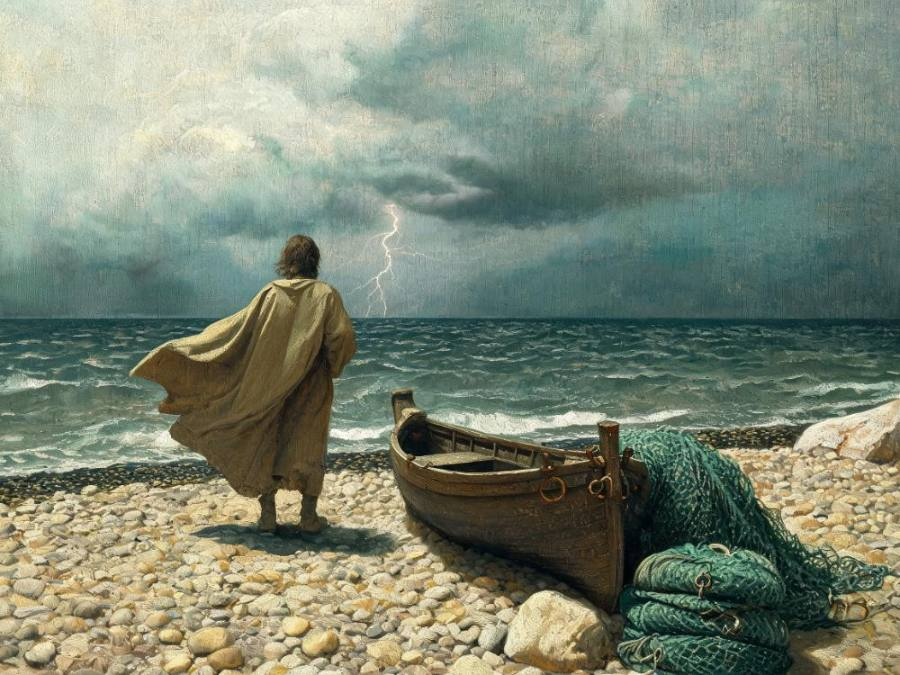
세베대의 아들 야고보
- 어떤 사람
- 아버지 세베대와 함께 배를 부리던 어부예요. 일꾼을 둘 만큼 살림이 넉넉했어요. 동생 요한과 함께 성미가 급했어요. 막 1:19–20
- 성경 속 장면
- 사마리아 마을이 예수님을 받아들이지 않자 “하늘에서 불을 내려 멸하자”고 했다가 꾸중을 들었어요. 베드로·요한과 함께 변화산과 겟세마네에 따라간 세 사람 중 하나예요. 눅 9:54–55 · 막 9:2 · 14:33
- 그 뒤 이야기
- 성경 열두 사도 가운데 죽음이 성경에 적힌 사람은 야고보 한 명뿐이에요. 헤롯 아그립바 1세가 칼로 죽였어요. 기원후 44년 무렵이에요. 행 12:1–2
2~4세기 야고보를 고발한 사람이 그의 증언을 듣고 자기도 믿는 사람이 되어 함께 죽었다는 이야기가 전해져요.
전설 스페인에 가서 전도했다거나 그곳에 묻혔다는 이야기는 7세기 뒤에 생겼어요.
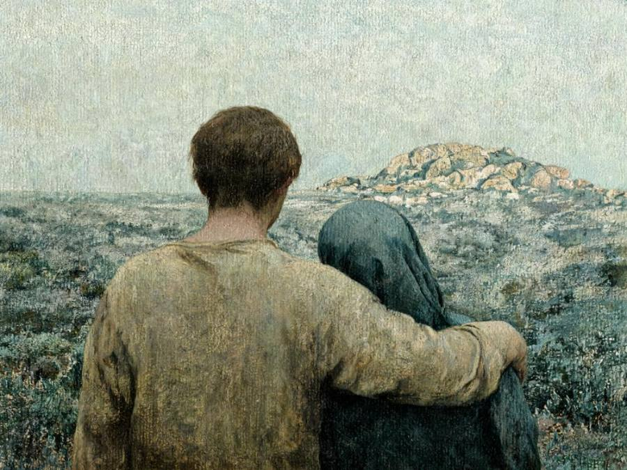
요한
- 어떤 사람
- 야고보의 동생이고 역시 어부예요. 예루살렘 교회의 ‘기둥’으로 불렸어요. 공회 사람들은 그를 배우지 못한 보통 사람으로 여겼어요. 갈 2:9 · 행 4:13
- 성경 속 장면
- 요한복음에는 이름 없이 ‘예수께서 사랑하시는 제자’가 나와요. 십자가 아래서 예수님이 그 제자에게 어머니 마리아를 맡기셨어요. 교회는 오래전부터 그가 요한이라고 보았지만, 복음서가 이름을 밝히지는 않아요. 요 19:26–27
- 그 뒤 이야기
- 2~4세기 에베소 교회에 머물며 트라야누스 황제(98~117년) 때까지 살았다고 이레나이우스가 적었어요. 에베소 감독 폴리크라테스도 요한이 에베소에 묻혔다고 썼어요.
전설 끓는 기름 가마에 들어갔다가 멀쩡히 나왔다는 이야기, 아주 늙어서 “자녀들아, 서로 사랑하라”는 말만 되풀이했다는 이야기는 200년 뒤·400년 뒤 기록에 처음 보여요.
열두 사도 중 거의 유일하게 순교하지 않고 늙어서 죽었다고 전해지는 사람이에요.
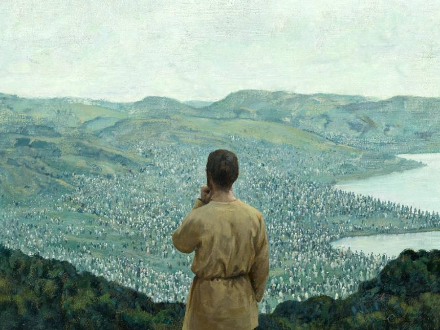
빌립
- 어떤 사람
- 베드로·안드레와 같은 벳새다 사람이에요. 예수님을 만나자마자 친구 나다나엘을 찾아가 “와서 보라”고 했어요. 요 1:43–46
- 성경 속 장면
- 오천 명이 모였을 때 예수님이 “어디서 떡을 사겠느냐” 물으시자, 빌립은 “이백 데나리온어치도 모자란다”며 계산부터 했어요. 마지막 저녁에는 “아버지를 보여 주소서”라고 여쭸어요. 요 6:5–7 · 14:8–9
- 그 뒤 이야기
- 2~4세기 190년 무렵 에베소 감독 폴리크라테스가 “열두 사도 중 하나인 빌립이 딸들과 함께 히에라볼리(지금의 튀르키예 파묵칼레)에 잠들어 있다”고 적었어요.
그런데 사도행전에는 예언하는 딸 넷을 둔 집사 빌립이 따로 나와요(행 21:8–9). 옛 사람들이 두 빌립을 섞어 기억했을 가능성이 있어요.
2011년 이탈리아 발굴단이 히에라볼리에서 빌립의 무덤으로 보이는 곳을 찾았어요. 5세기에 옛 교회에서 옮겨 온 무덤이에요.
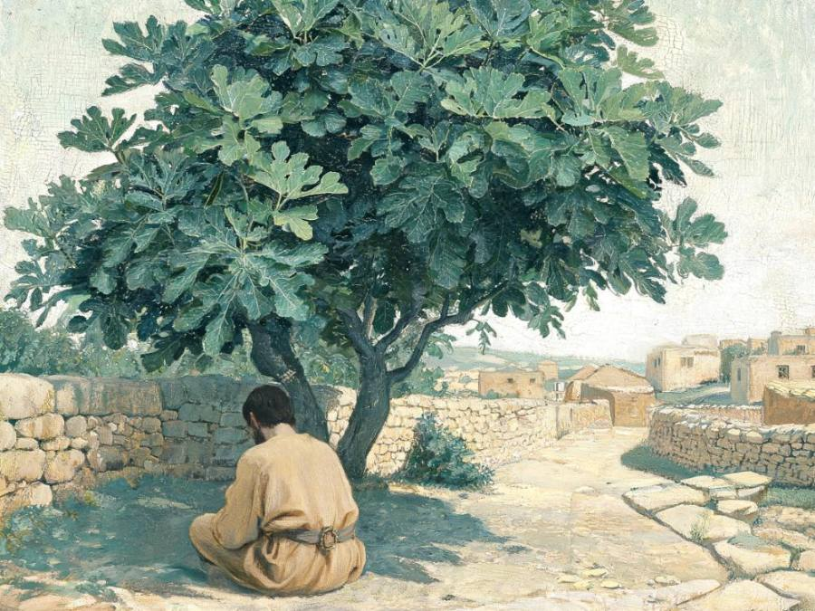
바돌로매
- 어떤 사람
- ‘바돌로매’는 본래 이름이 아니라 “돌매의 아들”이라는 뜻이에요. 그래서 진짜 이름이 따로 있었을 거라고 보는 사람이 많아요.
- 성경 속 장면
- 마태·마가·누가에서 바돌로매는 늘 빌립 짝이에요. 요한복음에는 바돌로매가 없고, 그 대신 빌립이 데려온 나다나엘이 나와요. 무화과나무 아래 있던 그를 예수님이 “간사한 것이 없는 사람”이라 부르셨어요. 둘이 같은 사람일 수 있지만, 확인된 것은 아니에요. 요 1:45–49 · 21:2
- 그 뒤 이야기
- 2~4세기 2세기 말 판타이노스라는 선생이 인도에 갔더니, 바돌로매가 남겨 둔 히브리 말 마태복음이 있었다고 에우세비오스가 적었어요.
전설 아르메니아에서 순교했다는 이야기는 그보다 한참 뒤 기록에 나와요.
예수께서 나다나엘이 자기에게 오는 것을 보시고 그를 가리켜 이르시되 보라 이는 참으로 이스라엘 사람이라 그 속에 간사한 것이 없도다
요한복음 1:47 · 개역개정
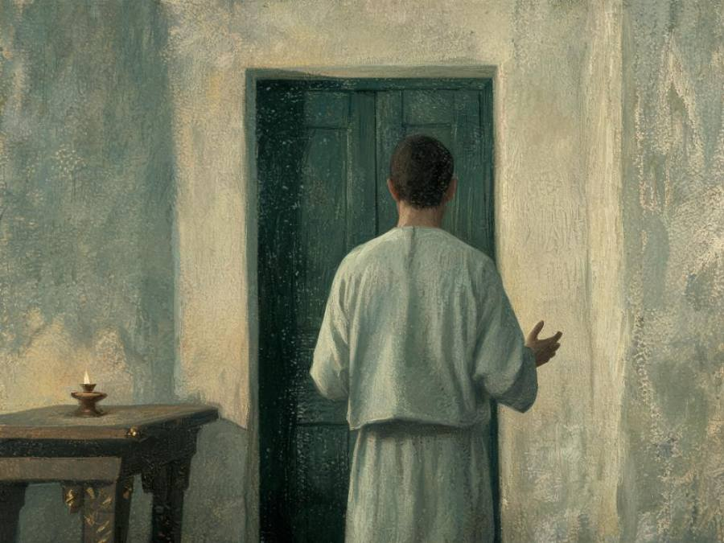
도마
- 어떤 사람
- 두 이름이 모두 ‘쌍둥이’라는 뜻이에요. 그런데 쌍둥이 형제가 누구인지는 성경에 나오지 않아요.
- 성경 속 장면
- ‘의심 많은 도마’로만 기억하기 쉬워요. 하지만 예수님이 위험한 유대로 가시려 할 때 “우리도 주와 함께 죽으러 가자”고 한 사람도 도마예요. 부활하신 예수님을 뵙고는 복음서에서 가장 분명한 고백을 했어요. 요 11:16 · 20:24–28
- 그 뒤 이야기
- 2~4세기 파르티아(지금의 이란 쪽)를 맡았다는 전승이 있어요. 3세기 초 시리아에서 쓴 『도마행전』은 도마가 인도에 갔다고 해요. 그 책에 나오는 군다포루스 왕은 실제로 있던 왕이라는 게 주화로 확인됐어요.
인도 남쪽 케랄라 지방에는 지금도 ‘도마 그리스도인’이라 불리는 교회가 있어요.
도마가 대답하여 이르되 나의 주님이시요 나의 하나님이시니이다
요한복음 20:28 · 개역개정
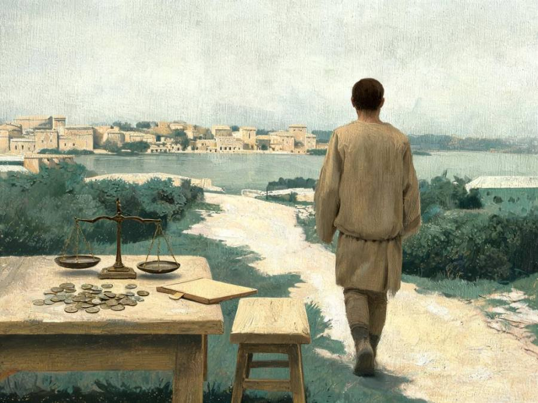
마태
- 어떤 사람
- 가버나움 길가 세관에서 통행세를 걷던 사람이에요. 세리는 로마 편에서 일한다며 동네 사람들에게 미움을 받았어요. 마가·누가는 같은 장면에서 그를 ‘레위’라고 불러요. 막 2:14 · 눅 5:27
- 성경 속 장면
- “나를 따르라” 한마디에 자리에서 일어났어요. 그리고 자기 집에 세리 친구들을 불러 큰 잔치를 열었어요. 자기 이름 앞에 ‘세리’를 붙인 명단은 마태복음 하나뿐이에요. 눅 5:29 · 마 10:3
- 그 뒤 이야기
- 1~2세기 초 파피아스는 “마태가 히브리 말로 주님의 말씀을 엮었다”고 적었어요.
2~4세기 2세기 중반 헤라클레온이라는 사람은 마태·빌립·도마를 관원 앞에서 신앙을 고백하고 죽은 사람들 명단에 넣지 않았어요. 마태가 어디서 어떻게 죽었는지는 미결이에요.
예수께서 그 곳을 떠나 지나가시다가 마태라 하는 사람이 세관에 앉아 있는 것을 보시고 이르시되 나를 따르라 하시니 일어나 따르니라
마태복음 9:9 · 개역개정
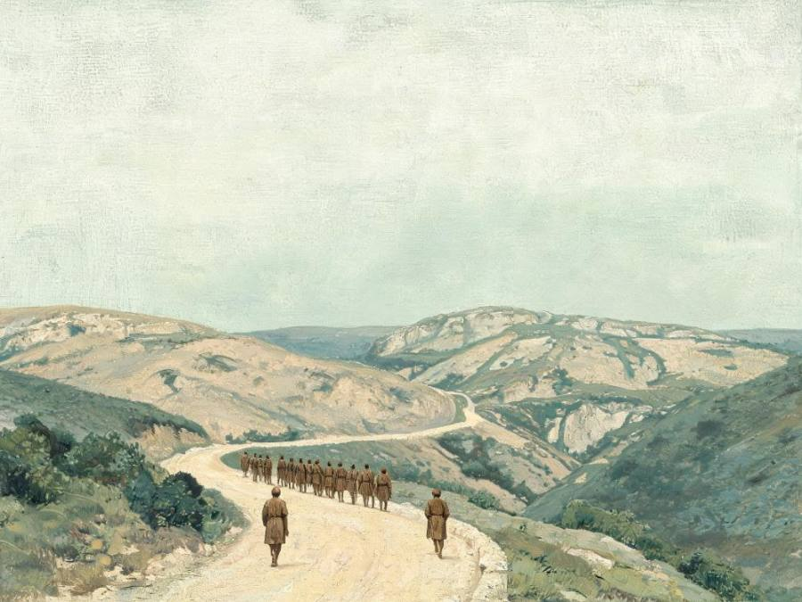
알패오의 아들 야고보
- 어떤 사람
- 이름 말고는 아는 것이 거의 없어요. 네 명단 모두에서 셋째 묶음 맨 앞에 오는데도, 혼자 한 말이나 한 일이 성경에 한 줄도 없어요.
- 성경 속 장면
- 십자가 곁 여인들 가운데 ‘작은 야고보의 어머니 마리아’가 나와요. 이 ‘작은 야고보’가 그일 수도 있어요. ‘작은’은 키가 작거나 나이가 어리다는 뜻일 거예요. 마태(레위)도 ‘알패오의 아들’이라 형제였을지도 모르지만, 성경은 말하지 않아요. 막 15:40 · 2:14
- 그 뒤 이야기
- 전설 뒷날 이야기들은 이 야고보를 예수님의 동생 야고보와 자주 섞었어요. 그래서 믿을 만한 기록이라 할 것이 거의 없어요.
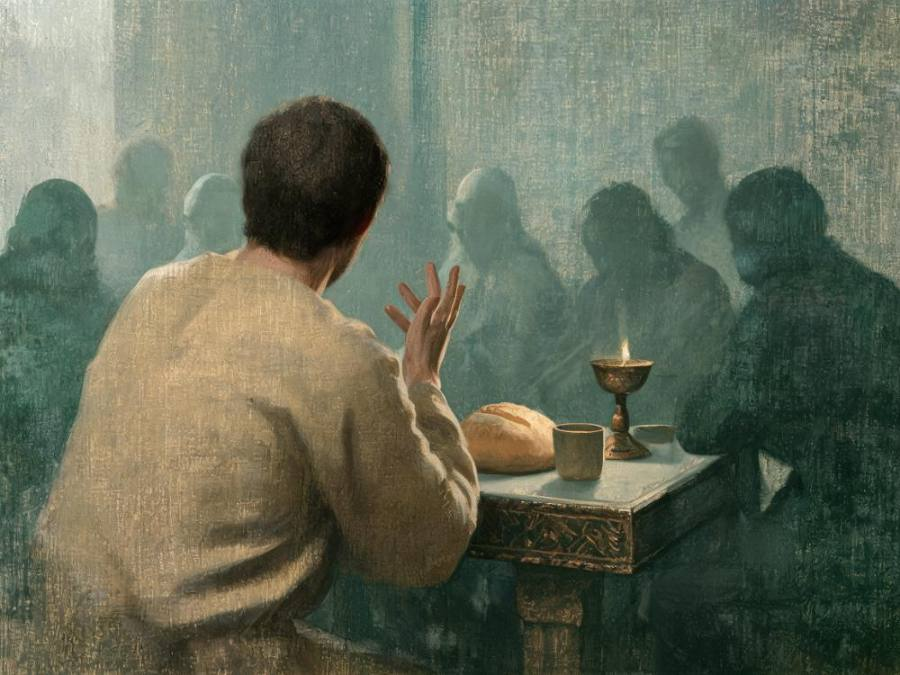
다대오
- 어떤 사람
- 마태·마가는 다대오, 누가는 ‘야고보의 아들 유다’라고 불러요. 뒤에 나오는 가룟 유다와 헷갈리지 않게 다른 이름을 즐겨 불렀을 수 있어요.
- 성경 속 장면
- 마지막 저녁에 “주여, 어찌하여 자기를 우리에게는 나타내시고 세상에는 아니하려 하시나이까” 하고 물은 사람이에요. 성경에 남은 그의 말은 이 질문 하나예요. 요 14:22
- 그 뒤 이야기
- 2~4세기 에우세비오스는 도마가 ‘다대오’를 에데사(지금의 튀르키예 남동쪽)로 보냈다는 이야기를 실었어요. 그런데 거기서 다대오는 열두 제자가 아니라 칠십 인 중 한 사람이라고 적혀 있어요. 같은 사람인지 미결이에요.
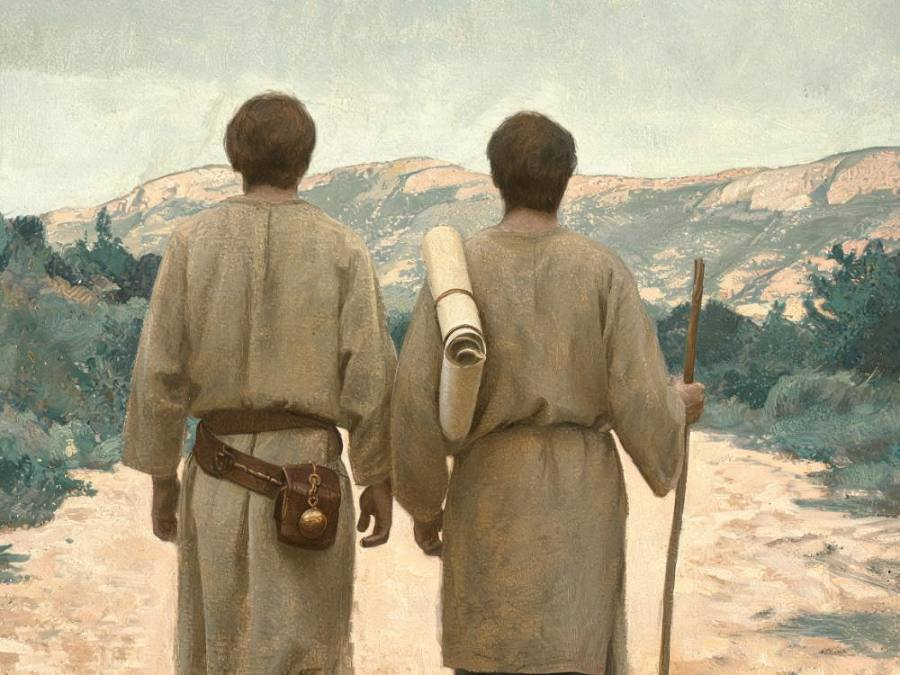
가나나인 시몬
- 어떤 사람
- ‘가나나인’은 가나안 땅 사람이라는 뜻이 아니에요. ‘열심 있는 사람’을 뜻하는 아람 말이에요. 누가는 같은 뜻의 헬라 말 ‘셀롯’으로 옮겼어요. 마 10:4 · 눅 6:15
- 성경 속 장면
- 하나님의 율법에 열심인 사람, 어쩌면 로마를 몰아내자던 사람이었어요. 그런 사람이 로마 편에서 세금을 걷던 마태와 한 무리가 되었어요. 둘이 서로 어떻게 지냈는지는 성경에 없어요.
- 그 뒤 이야기
- 참고 ‘열심당’이라는 무장 단체가 이름을 걸고 나타난 것은 66년 유대 전쟁 무렵이에요. 그래서 예수님 때의 ‘셀롯’은 그냥 ‘열심 있는 사람’이었을 수도 있어요.
전설 페르시아, 이집트, 브리타니아까지 이야기마다 간 곳이 달라요. 어느 쪽도 확인되지 않았어요.
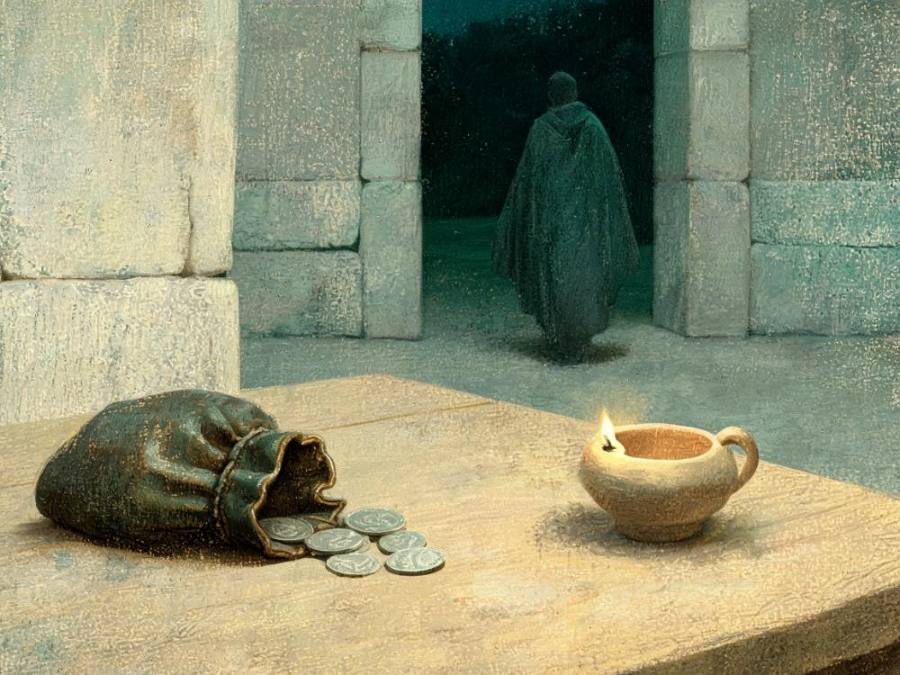
가룟 유다
- 어떤 사람
- ‘가룟’은 아마 ‘그리욧 마을 사람’이라는 뜻이에요. 아버지 시몬도 가룟이라 불렸으니 집안의 고향 이름일 가능성이 커요. 그리욧은 유다 남쪽 마을이라, 모두 갈릴리 사람인 제자들 가운데 혼자 남쪽 출신이었을지도 몰라요. 요 6:71 · 수 15:25
- 성경 속 장면
- 제자들의 돈궤를 맡았는데 거기서 몰래 돈을 꺼내 썼어요. 은 삼십에 예수님을 넘겨주기로 하고, 마지막 저녁에 밤길로 나갔어요. 요 12:6 · 마 26:15 · 요 13:30
- 그 뒤 이야기
- 성경 유다의 죽음은 마태복음과 사도행전에 두 번 나와요. 두 기록은 서로 다른 면을 전해요. 마 27:3–8 · 행 1:18–19
빈 곳은 제비를 뽑아 맛디아가 채웠어요. 세례 요한 때부터 예수님이 하늘로 올라가실 때까지 줄곧 함께 다닌 사람 중에서 뽑았어요. 행 1:21–26
별명을 붙여 주신 분은 예수님이었어요
시몬에게는 ‘바위’를, 야고보와 요한에게는 ‘우레의 아들’을 붙여 주셨어요. 흔한 이름 사이에서 한 사람 한 사람을 알아보신 거예요.
또 세베대의 아들 야고보와 야고보의 형제 요한이니 이 둘에게는 보아너게 곧 우레의 아들이란 이름을 더하셨으며
마가복음 3:17 · 개역개정
정말 모두 순교했을까요?
“열두 제자는 모두 순교했다”는 말을 많이 들어요. 하지만 기록으로 따져 보면 사람마다 증거의 힘이 아주 달라요.
2015년 미국 학자 션 맥도웰이 사도마다 순교 기록을 모두 모아 점수를 매겼어요. 그 결과를 아이들 말로 옮겼어요.
| 사도 | 판단 | 왜 그럴까 |
|---|---|---|
| 베드로 | 거의 확실 | 성경의 예고와 1세기 말 로마 교회 편지가 함께 증언해요. |
| 세베대의 아들 야고보 | 거의 확실 | 사도행전 12장에 직접 적혀 있어요. |
| 도마 | 그럴 가능성이 큼 | 인도와 파르티아 전승이 여러 갈래에서 이어져요. |
| 안드레 | 그럴 법함 | 기록은 있지만 이야기책 색깔이 짙어요. |
| 빌립 · 바돌로매 · 마태 · 알패오의 아들 야고보 · 다대오 · 시몬 · 맛디아 | 반반 | 기록이 늦고 전설이 많이 붙어서 판단하기 어려워요. |
| 요한 | 아닐 가능성이 큼 | 오래된 기록들은 요한이 에베소에서 늙어 죽었다고 해요. |
예수님의 동생 야고보는 열두 제자가 아니에요. 예수님이 살아 계실 때는 형제들이 예수님을 믿지 않았어요(요한복음 7:5). 나중에 예루살렘 교회의 지도자가 되었어요. 집사 빌립도 열두 제자가 아니라 사도행전 6장에서 뽑힌 일곱 일꾼 중 한 사람이에요. 사마리아에 복음을 전하고 에티오피아 관리에게 세례를 준 사람이 이 빌립이에요.
어려운 말 풀이
- 사도 使徒
- “보냄 받은 사람”. 주인 대신 일을 맡아 멀리 가는 심부름꾼이에요.
- 순교 殉敎
- 믿음을 버리지 않다가 목숨을 잃는 일이에요.
- 전승 傳承
- 글이나 말로 대대로 이어져 내려온 이야기. 사실일 수도 있고 아닐 수도 있어요.
- 세리 稅吏
- 세금 걷는 사람. 로마를 위해 일하고 돈을 더 걷는 일이 많아 미움을 받았어요.
- 열심당 셀롯
- 하나님의 율법에 열심인 사람들. 나중에는 로마에 맞서 싸운 무리 이름이 됐어요.
- 아람 말
- 예수님과 제자들이 집에서 쓰던 말이에요. 게바·도마·보아너게가 아람 말이에요.
- 헬라 말
- 그리스 말. 로마 제국 동쪽에서 널리 쓰였고 신약성경이 이 말로 쓰였어요.
- 교부 敎父
- 사도들 다음 세대부터 교회를 가르친 지도자들. 이레나이우스, 오리게네스 같은 사람이에요.
근거 자료
제자들의 이름과 성경 속 장면은 모두 신약성경 본문에서 가져왔습니다. 성경 밖 이야기는 기록된 시대를 표시했고, 성경이 말하지 않는 부분은 “가설”이나 “미결”로 적었습니다. 제자들이 어디서 어떻게 죽었는지는 야고보 한 사람 말고는 성경에 없으며, 나머지는 모두 성경 밖 기록에 기댑니다.
- 대한성서공회 『성경전서 개역개정판』 마태복음 10:2–4, 마가복음 3:14–19, 누가복음 6:13–16, 요한복음 1장·11장·14장·20장·21장, 사도행전 1:13–26, 12:1–2
- 『클레멘스1서』 5장(96년 무렵). 베드로가 여러 고난을 견디고 순교했다는 기록
- 에우세비오스 『교회사』 1권 13장(에데사의 다대오, “칠십 인 중 하나”), 2권 9장(야고보와 고발자, 알렉산드리아의 클레멘스 인용), 3권 1장(도마–파르티아, 안드레–스구디아, 요한–아시아, 베드로가 머리를 아래로 두고 십자가에 달림, 오리게네스 인용), 3권 24장(마태의 복음서), 3권 31장(폴리크라테스의 편지, 빌립과 요한의 무덤), 3권 39장(파피아스의 증언), 5권 10장(판타이노스와 인도의 바돌로매)
- 이레나이우스 『이단 반박』 3권 3장 4절. 요한이 트라야누스 때까지 에베소에 머묾
- 알렉산드리아의 클레멘스 『양탄자』(스트로마타) 4권 9장. 헤라클레온이 마태·빌립·도마·레위를 따로 분류함
- R. Bauckham, Jesus and the Eyewitnesses (2006; 2판 2017). T. Ilan, Lexicon of Jewish Names in Late Antiquity I (2002)의 남자 이름 2,625건 집계(시몬 243 · 요셉 218 · 유다 164 · 요한 122)
- S. McDowell, The Fate of the Apostles (Ashgate, 2015). 사도별 순교 기록의 개연성 평가
- F. D’Andria 발굴단, 히에라폴리스 성 빌립 무덤 발견 보도(2011년 7월, Biblical Archaeology Society)
- 『IVP 성경배경주석 신약』 마태복음 10:1–4 해설. 여러 이름을 쓰는 관습, ‘가나나인’과 ‘셀롯’, ‘사도’의 뜻(82쪽)
후대 전설(안드레의 X자 십자가, 야고보의 스페인 전도, 바돌로매의 아르메니아 순교, 요한의 끓는 기름)은 성립 시기만 밝히고 자세히 싣지 않았습니다. 순교 판단표는 맥도웰의 아홉 단계 척도를 다섯 단계로 줄여 옮긴 것입니다.